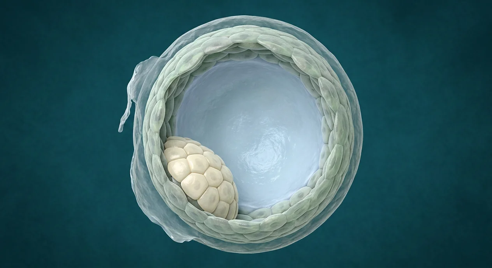

How this part of the body works
After fertilization in a uterine tube, the zygote divides into blastomeres while moving toward the uterus. Early cleavage increases cell number without major increase in overall size inside the zona pellucida. Compaction forms a morula, then a fluid-filled blastocoel and two broad cell populations define the blastocyst: outer trophectoderm/trophoblast and an inner cell mass. Hatching from the zona precedes adhesion to endometrium. Timing varies; the illustration shows one blastocyst only, not a timed sequence or an implanted embryo.
Follow every stage independently
Sperm and egg are separate branches before fertilization. Obstetric gestational weeks are usually counted from the last menstrual period, roughly two weeks before conception. Digital labor-stage illustrations model separate moments, not clinical birth photographs or patient measurements.
See the anatomy at the right scale
Tap an image to enlarge and tap again to close. These are digital educational models, not microscope photos, measured ultrasounds, clinical birth images or exact developmental clocks.
Original explanatory vector-style cell diagram, not a microscopic photograph.
Two blastomeres within a conceptual zona; relative positions are simplified.
Four blastomeres inside the zona; cell divisions do not imply marked growth of the whole conceptus.
Eight conceptual blastomeres remain within the zona; this is a vector-style diagram, not a micrograph.
A solid group of 16 conceptual cells; no blastocoel yet.
Different later stage: a hollow blastocyst, not a zygote or morula.
Stage anatomy and developmental milestones
These 20 anatomy and development entries explain each stage without placing false pointers on an illustrative context plate.
Zygote
Diploid one-cell conceptus results after fertilization of one oocyte by one sperm.
What it doesBegins early development.
Clinical connectionA zygote has not yet implanted and is not a fetus.
Picture context Original explanatory vector-style cell diagram, not a microscopic photograph.
First cleavage
The zygote divides into two blastomeres without the usual cell growth between divisions.
What it doesBegins increase in cell number.
Clinical connectionExact day of the first division is variable.
Picture context Two blastomeres within a conceptual zona; relative positions are simplified.
Blastomere
Each early daughter cell forms as the conceptus cleaves in its surrounding zona.
What it doesBuilds the multicellular early conceptus.
Clinical connectionOne blastomere alone is not the same as a mature embryo.
Picture context Two blastomeres within a conceptual zona; relative positions are simplified.
Four-cell stage
Additional cleavage creates a small group of blastomeres still enclosed by zona.
What it doesExtends early proliferation.
Clinical connectionThis single blastocyst plate does not show a four-cell stage.
Picture context Four blastomeres inside the zona; cell divisions do not imply marked growth of the whole conceptus.
Eight-cell stage
Further divisions make smaller blastomeres as the early conceptus approaches compaction.
What it doesSets up more extensive cell-to-cell contact.
Clinical connectionDo not count blastocyst cells to infer a precise day.
Picture context Eight conceptual blastomeres remain within the zona; this is a vector-style diagram, not a micrograph.
Zona pellucida during transit
Extracellular glycoprotein envelope persists around early cleavage stages.
What it doesLimits premature attachment during tubal passage.
Clinical connectionA tube is not the intended implantation site.
Picture context Different later stage: a hollow blastocyst, not a zygote or morula.
Conceptus tubal transport
Cilia and tubal contractile activity help move the dividing conceptus into uterine cavity.
What it doesPositions conceptus for later endometrial interaction.
Clinical connectionImpaired transport may increase ectopic pregnancy risk.
Picture context A related regional anatomy model; the individual event or cell is not separately identifiable in this picture.
Compaction
Blastomeres strengthen contacts and organize an outer and inner cell arrangement.
What it doesPrepares for tissue-population divergence.
Clinical connectionNot individually resolved in a late blastocyst teaching render.
Picture context A solid group of 16 conceptual cells; no blastocoel yet.
Morula
Solid compact cluster of blastomeres forms before a fluid-filled cavity develops.
What it doesTransitional stage before blastocyst formation.
Clinical connectionA morula is not a hollow blastocyst.
Picture context A solid group of 16 conceptual cells; no blastocoel yet.
Cavitation
Fluid accumulates within cell cluster and a blastocoel begins to form.
What it doesEstablishes fluid-filled inner space.
Clinical connectionThe large cavity in the plate depicts a blastocyst, not a fetus.
Picture context Different later stage: a hollow blastocyst, not a zygote or morula.
Blastocoel
Fluid-filled cavity occupies much of a blastocyst.
What it doesSeparates inner cell group and outer cell layer.
Clinical connectionNot the later amniotic sac around a fetus.
Picture context Different later stage: a hollow blastocyst, not a zygote or morula.
Outer trophoblast layer
Outer cell population surrounds the blastocyst; later contributes to extraembryonic tissues.
What it doesInteracts with maternal endometrium during implantation.
Clinical connectionA single outer-cell layer does not equal a mature placenta.
Picture context Different later stage: a hollow blastocyst, not a zygote or morula.
Inner cell mass
Localized cluster on one side of blastocyst contributes to embryo proper and some extraembryonic tissues.
What it doesSeeds later embryonic development.
Clinical connectionIt is a group of cells, not a miniature baby.
Picture context Different later stage: a hollow blastocyst, not a zygote or morula.
Embryonic pole
Side of the blastocyst containing the inner cell mass.
What it doesDefines a directional relationship as implantation begins.
Clinical connectionThis is not the maternal cervix or a fetal head.
Picture context Different later stage: a hollow blastocyst, not a zygote or morula.
Hatching from zona
Expanding blastocyst emerges from the zona pellucida.
What it doesAllows cell surface to attach to receptive endometrium.
Clinical connectionAn unhatched conceptus has not directly attached.
Picture context Different later stage: a hollow blastocyst, not a zygote or morula.
Entry into uterine cavity
Preimplantation conceptus reaches endometrial environment after tubal transit.
What it doesProvides setting for hatching and eventual attachment.
Clinical connectionBeing in uterus is not the same as implantation.
Picture context A related regional anatomy model; the individual event or cell is not separately identifiable in this picture.
Endometrial secretions
Uterine gland fluid supplies early trophic support before placental circulation is established.
What it doesSupports preimplantation growth.
Clinical connectionNo mature placenta feeds the early blastocyst on this image.
Picture context A related regional anatomy model; the individual event or cell is not separately identifiable in this picture.
Variable early timing
Division, hatching and attachment timing vary from conceptus to conceptus.
What it doesPrevents treating image as a clinical day-by-day clock.
Clinical connectionPregnancy dating uses clinical methods rather than counting drawn cells.
Picture context Original explanatory vector-style cell diagram, not a microscopic photograph.
Early embryonic splitting
One early conceptus can split and contribute to monozygotic twins.
What it doesExplains a distinct origin from two separately fertilized oocytes.
Clinical connectionThe plate depicts only one blastocyst.
Picture context Different later stage: a hollow blastocyst, not a zygote or morula.
Preimplantation to implantation
After hatching, trophoblast can adhere to receptive uterine lining.
What it doesLinks this chapter to the separate implantation chapter.
Clinical connectionDo not show a blastocyst free in lumen as already embedded.
Picture context Different later stage: a hollow blastocyst, not a zygote or morula.
Five questions about Zygote to blastocyst · early divisions
Short answers grounded in the structures described above. Use the illustrated guide for anatomical context.
What does cleavage do to a newly formed zygote?
It produces more, initially smaller, blastomeres while the conceptus remains within the zona pellucida. Early divisions do not require the whole sphere to grow much larger at every division.
How is a morula different from a blastocyst?
A morula is a compact solid cluster. A blastocyst has a fluid-filled blastocoel, an outer cell layer and a localized inner cell mass; the illustration depicts the latter, not every earlier stage.
What does the inner cell mass become?
Its descendants contribute to the embryo proper and certain extraembryonic structures. A blastocyst cell cluster is not a miniature fully formed fetus.
Why does the blastocyst hatch from the zona pellucida?
Loss of the extracellular zona permits trophoblast contact with receptive uterine endometrium. A conceptus still enclosed by the zona is not already embedded in uterine tissue.
Does a blastocyst in the uterus mean pregnancy has implanted?
Not necessarily. Arrival in the uterine cavity and hatching precede attachment to endometrium; implantation is a separate stage with variable timing.
Related anatomy guides
Follow these connected structures and body systems in the illustrated atlas.
 Fertilization · sperm meets oocyteFollow sperm transit, capacitation, zona interaction, membrane fusion and formation of the diploid zygote.↗
Fertilization · sperm meets oocyteFollow sperm transit, capacitation, zona interaction, membrane fusion and formation of the diploid zygote.↗ Implantation · blastocyst in endometriumSeparate implantation stage: endometrial receptivity, hatching, trophoblast invasion and early hCG.↗
Implantation · blastocyst in endometriumSeparate implantation stage: endometrial receptivity, hatching, trophoblast invasion and early hCG.↗ Uterus — layers & cavityThe womb in cross-section: endometrium, junctional zone, myometrium, cavity, isthmus and the key clinical boundaries.↗
Uterus — layers & cavityThe womb in cross-section: endometrium, junctional zone, myometrium, cavity, isthmus and the key clinical boundaries.↗ Female pelvis & perineumThe female pelvic floor in sagittal section: bladder and urethra, vagina and anteverted uterus, rectum behind — plus the ligaments and pouches that position them.↗
Female pelvis & perineumThe female pelvic floor in sagittal section: bladder and urethra, vagina and anteverted uterus, rectum behind — plus the ligaments and pouches that position them.↗Further reading
General anatomy references and related source chapters for continued study. These links do not make the digital illustrations clinical images or certify every anatomical variant.
This educational page is not medical advice and has not undergone formal clinical peer review. Spotted an error? Contact the editor.
Open the regional digital plate, study entries and a short self-test. Visible markers occur only for identifiable sperm and oocyte structures.